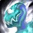
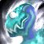
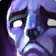
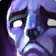
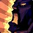
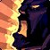

Dungeons & Affixes
This season's mythic+ dungeons has a lot of challenging mobs and bosses. In this section, we will first cover some optimal dungeon routes, along with which enemies to be careful of. Next, we will cover how to live through certain boss encounters, in addition to helping your team live. Finally, we will go over all of the affixes and which ones that can change your route.
Dungeons
We will go over the overall difficulty of each dungeon as a Brewmaster. Later on this page, we will go into more detail about each boss and certain mobs.
Algeth'ar Academy
Easy
This trash isn't overly hard, but there are a few bleeds and magic attacks that can kill you if you are not careful. Outside of this, though, it is a lot of physical damage that is easy to mitigate as Brewmaster. You want to take Versatility as your buff.
Dungeon Routes
Every route is designed to be as pug friendly as possible. Certain affixes may change the speed at which you can pull. You should always take into account your group composition, too.
Bloodlust Timings: Pull 1, Crawth, Vexamus, Echo of Doragosa
This route is very straight forward. You just hold W the entire time, except for the end, where you will invis into the last boss's room after getting all of your %. If you don't have lust for Vexamus, it can be worth lusting the large trash pull before Echo of Doragosa.
Bloodlust Timings: Pull 1, Pull 9, Decatriarch Wratheye
This route is very similar to the season 2 routes, just without all of the priest skips. If your lust isn't up for pull 9, you should pull slightly smaller. Once lust comes up, you should instantly use it and do a larger pull. Regarding skipping Strinkbreath, you can pull him to the side and die while your team runs past, or you can all jump onto the bridge when he's at the pinnacle of his pat.
Bloodlust Timings: Pull 1, On CD, Khajin the Unyielding, Primal Tsunami
There aren't really any tricks to this dungeon. The route consists of holding W and pulling packs in the safest and most efficient way possible.
Bloodlust Timings: Pull 1, On CD, On CD, Warlord Sargha
With the chains working differently this season, the route looks a little different than normal. Instead of doing Magmatusk as the first boss, we go straight to Chargath and Forgemaster Gorek. You want to use chains on every pull in that area. Right before Warlord Sargha, you can skip the triple pack by hugging right and walking between them and the mob on the stairs.
Bloodlust Timings: Pull 1, On CD, Kyrakka and Earkhart Stormvein
The route is the exact same as it was in season 1. You want to make sure that you invis to Defier Draghar after the second pull, fighting him in the small entryway of the first boss. When it comes to avoiding the fire dragon on the ring, you want to watch where he is in the skies, making sure to avoid holding mobs away from his pat.
Bloodlust Timings: Pull 1, On CD, On CD, Umbrelskul
This route is very simple. After pulling the first and second pull, you want to jump down into the first boss's room. After pulling two of the three packs on the first ring, you can jump down into the second boss's room. This will require someone to have some sort of fall damage reduction or slow fall, as well as a way to res the people that die to fall damage.
Bloodlust Timings: Pull 1, On CD, On CD, Balakar Khan
This route is almost identical to the season 1 route. You want to go to Granyth's area first, then The Raging Tempest's area, and then Teera and Maruuk's area. To skip to the last boss, you can just fly super high to the left, which will end up landing you on the cliff near the first boss's arena.
Bloodlust Timings: Pull 1, Sentinel Talondras, On CD, Chrono-Lord Deios
This route is pretty much identical to the season 2 route. For the fourth pull, make sure that you los everything to neatly group it up. Before the last boss, you will want to invis the two guards. Other than this, you pretty much just walk in a straight line.
Bosses
This section will go over the difficulty of each boss as a Brewmaster. It will discuss tips and tricks if there are any, as well as specific defensive rotations for survivng difficult tank busters.
Vexamus
Medium
Vexamus is relatively easy as a Brewmaster, so long as you are careful and cycle your defensives for every Arcane Expulsion. If your group is struggling to live, you can help out by pressing a large defensive and grabbing two or three orbs, too.
Hackclaw's War-Band
Easy
This boss's tank damage is super low, as long as you cast a defensive for each Savage Charge. As Brewmaster, in lower keys, you can instant Touch of Death the first Hextrick Totem, making the fight even easier.
Watcher Irideus
Easy
This boss has no tank damage at all since you can step out of Titanic Fist. You just want to make sure that you the Nullification Devices die on the boss and that you are not in their circle.
Chargath, Bane of Scales
Hard
Chargath's Fiery Focus has been reworked this season and turned into a massive channeled tank buster. You want to make sure that you use multiple defensives for each one, especially if your group is slow to do chains.
Melidrussa Chillworn
Hard
This boss does a ridiculous amount of tank damage, especially because we are weak to magic damage. She spam casts Frigid Shard, which hits us extremely hard. You want to try your best to cycle your defensives to whenever needed.
Leymor
Hard
This season, Leymor's Erupting Fissure is now locked onto the tank, forcing you to eat it. This does massive damage, requiring a defensive for each one. Not only this, but he also applies a huge magic DoT called Infused Strike, which will require another defensive or two over its duration. This boss is extremely challenging to live, and requires very good play, especially in high keys.
Granyth
Easy
This boss doesn't do any tank damage. When the adds come out, you want to make sure that you try and cc them onto the boss, that way you are damaging both of them at the same time.

The Lost Dwarves
Easy
This boss's tank damage is a complete joke. While there is a tank buster, it doesn't hit hard at all. While it is a good idea to defensive each tank buster, you can get away without it in low and medium keys.
Affixes
At the moment there are a lot of punishing affixes in mythic+. In this section, we will go over each one and how they may impact certain dungeons.

 
 


 



Fortified
This affix makes mobs have additional health and do additional damage. This is much preferred over Tyrannical, as it makes dungeons overall easier, and you can still time after a wipe or two. Make sure that you pull a little bit smaller than you would on tyrannical, though.